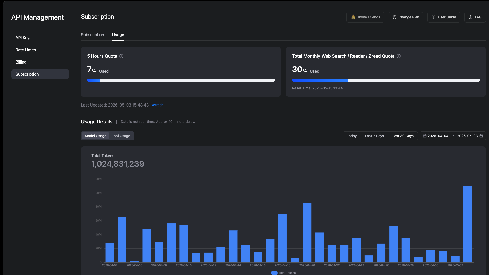
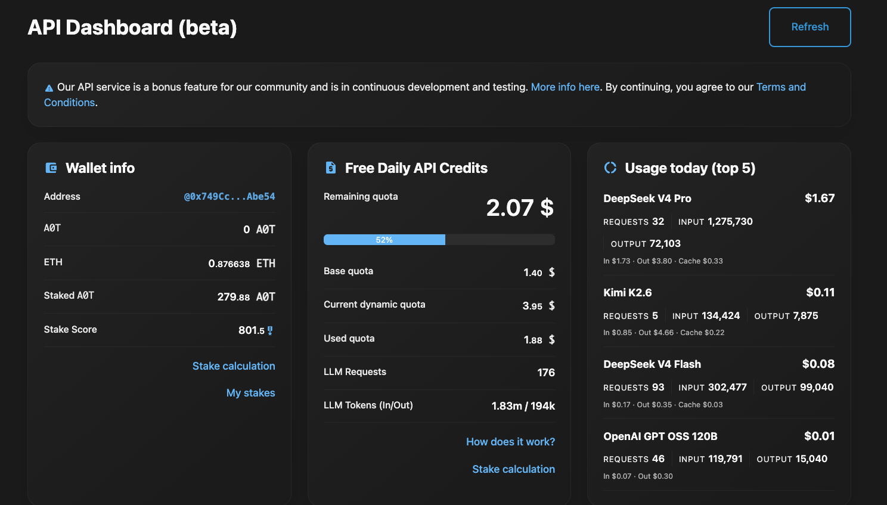
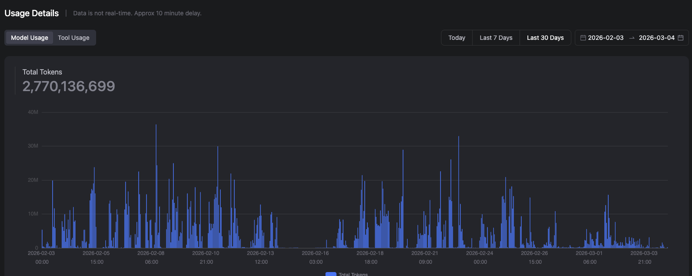
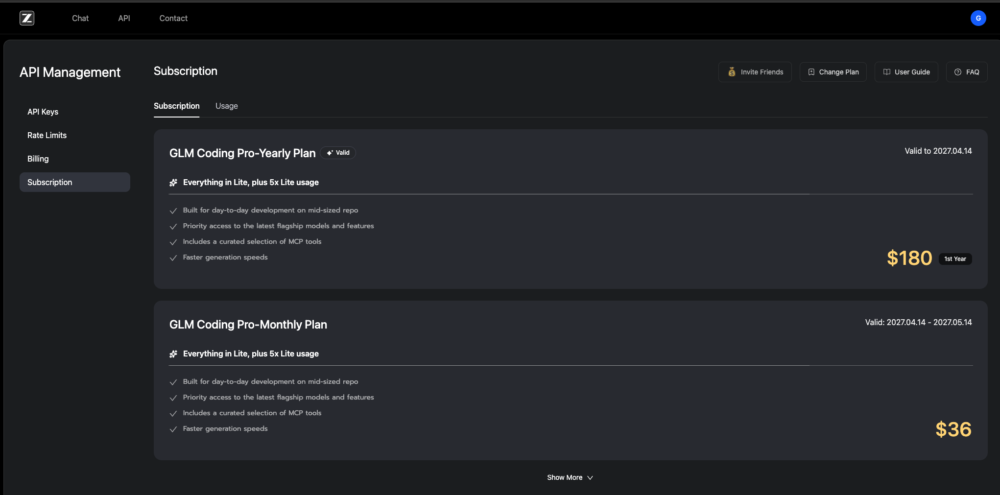
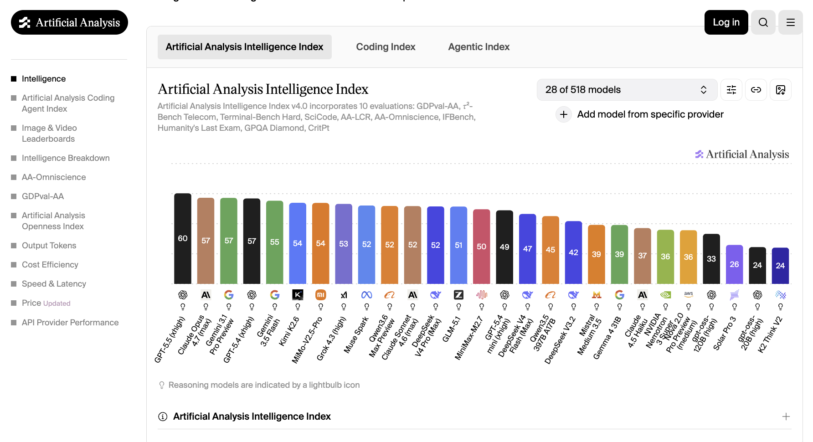
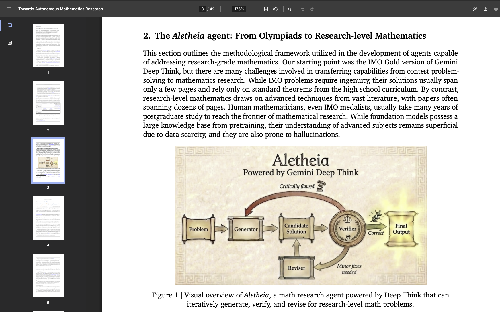
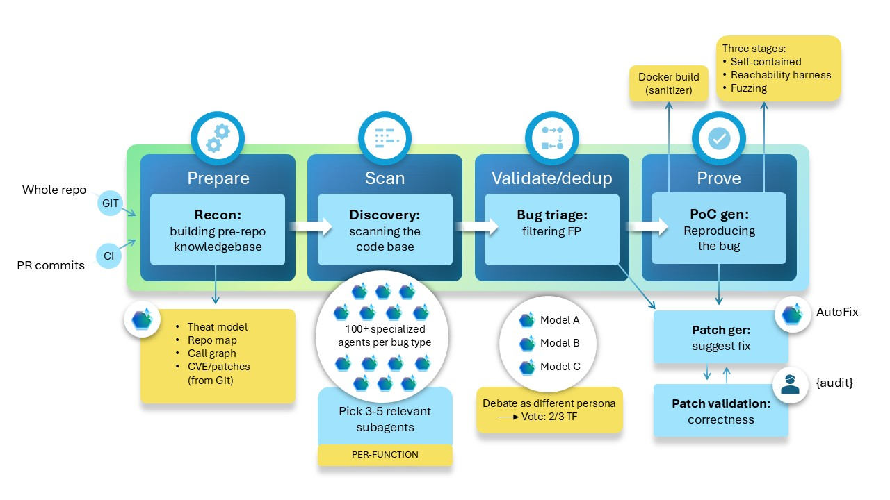

Who uses Claude Code, Codex, Cursor, or Windsurf weekly?
Who uses AI daily?
Who wishes they had Claude Mythos?
Who has tried OpenClaw or Hermes and actually saved time?
Challenge your assumptions
True or False?
1. You need expensive models to get great results.
2. Open source models are garbage compared to frontier.
3. Running locally is the cheapest path.
4. More tokens automatically means better results.
5. You need Claude Opus to do serious work.
Challenge your assumptions
True or False?
1. You need expensive models to get great results.
2. Open source models are garbage compared to frontier.
3. Running locally is the cheapest path.
4. More tokens automatically means better results.
5. You need Claude Opus to do serious work.
Challenge your assumptions
True or False?
1. You need expensive models to get great results.
2. Open source models are garbage compared to frontier.
3. Running locally is the cheapest path.
4. More tokens automatically means better results.
5. You need Claude Opus to do serious work.
Challenge your assumptions
True or False?
1. You need expensive models to get great results.
2. Open source models are garbage compared to frontier.
3. Running locally is the cheapest path.
4. More tokens automatically means better results.
5. You need Claude Opus to do serious work.
Challenge your assumptions
True or False?
1. You need expensive models to get great results.
2. Open source models are garbage compared to frontier.
3. Running locally is the cheapest path.
4. More tokens automatically means better results.
5. You need Claude Opus to do serious work.
The problem
The Token Trap
"I'm spending a fortune."
"I don't know which model to use."
"Every prompt turns into babysitting."
"I hit limits constantly."
The desired outcome
You want to:
Ship faster.
Spend less.
Use the right model for the job.
Stop babysitting every step.
Turn messy work into finished outputs.
What's possible
I burn a lot of tokens.
I get a lot of work back.

How the tokens break down
I use multiple models.
Each has its strength. Together, they're unstoppable.

What's possible
One month: 2.7 billion tokens.

All that work. How much did it cost?
The surprise
I spend about $40/month.
I got in early. I locked in yearly pricing.

Why listen to me?
I've been in the trenches.
I test new models constantly.
I build with agentic tools daily.
I care about output, not hype.
I track the market because it changes fast.
The frame for everything
AI Without the Bill Shock
Goal = (Value × Throughput) ÷ Cost
How to win the game
Three Levers
Increase value.
Increase throughput.
Decrease wasted cost.
Myth #1
Frontier vs. open source is the decision.
MYTH
Choose one or the other.
REALITY
Use both.
Myth #1
Frontier vs. open source is the decision.
MYTH
Choose one or the other.
REALITY
Use both.
Myth #2
Buy a Mac Mini, run local, get frontier smarts.
MYTH
Local models ≈ frontier models.
REALITY
Local is great for learning. Frontier is still significantly smarter.
Myth #2
Buy a Mac Mini, run local, get frontier smarts.
MYTH
Local models ≈ frontier models.
REALITY
Local is great for learning. Frontier is still significantly smarter.
Myth #3
Big context means big cost.
MYTH
1M tokens = panic.
REALITY
Caching changes the math.
Myth #3
Big context means big cost.
MYTH
1M tokens = panic.
REALITY
Caching changes the math.
How caching works
Input vs. Output vs. Cached.
Output tokens — $40 (what people see)
Input tokens — $10 (4× cheaper than output)
Cached input — $1 (10× cheaper than input)
THE REALITY
Cached input is 40× cheaper than output.
Myth #4
Ask AI which open model to use.
PROBLEM
Its answer may already be stale.
REALITY
Check live benchmarks.
Myth #4
Ask AI which open model to use.
PROBLEM
Its answer may already be stale.
REALITY
Check live benchmarks.
Where to check
ArtificialAnalysis.ai

Live model comparisons.
Updated continuously.
Check before you choose.
Current recommendations
My current shortlist:
GLM — coding
Kimi — research and long context
DeepSeek — efficiency
MiniMax — worth watching
Check live benchmarks first.
The shift
What if the model is not the main advantage?
The pattern
The system loop.
Generator → Verifier → Reviser → Retry

The pattern in practice
Recursive self-improvement.
Each iteration gets better. The system learns from itself.
The pattern at scale
Microsoft MDASH: 88.4%
Claude Mythos: 83.1%
CyberGym security benchmark
How it works at scale
100+ specialized agents.
Some find issues.
Some challenge them.
Some verify.
Some revise.

The aha moment
You don't need bigger models. You need better systems.
Architecture beats model size.
Coordination beats raw power.
Systems > Scale.
Agent architecture
The HAHA Pattern
H — A — H — A
H = Human (kickoff)
A = Agent (work)
H = Human (verification)
A = Agent (revision)
Humans at both ends: kickoff AND verification.
Agent architecture
The HAaAH Pattern
H — A — a — a — A — H
H = Human
A = Big model (frontier)
a = Small models (open source)
A = Big model (frontier)
H = Human
Big models at the ends. Small models in the middle.
Why U+AI beats AI
Humans are sample-efficient.
We don't need millions of examples.
We generalize from very few data points.
We spot patterns models miss.
THE GOOD NEWS
U + AI will beat AI alone for the foreseeable future.
Before we break
What stuck so far?
Who learned something new today?
Who already has ideas to try tonight?
For those who didn't raise their hand...
Part 2 is exact things to do, exact ways to use this.
You've earned it
5-minute break
Stretch. Grab a drink. Talk to your neighbor.
Part 2
THE HOW-TO
~30-35 minutes
Strategy #1
Use both.
FRONTIER
Planning
Architecture
Complex reasoning
OPEN SOURCE
Execution
Implementation
High-throughput work
In action
The both strategy in action.
STEP 1: Frontier (Planning)
"Plan this feature refactoring. Write your plan as if passing to a junior engineer. Include all context they need to execute."
STEP 2: Open Source (Execution)
"Implement this plan. Write clean code. Add tests for all edge cases."
The workflow in practice
The Double Hack.
Four models. One task. Frontier → Open Source → Open Source → Frontier
1. FRONTIER (Claude/GPT): "Write a spec/plan as if handing off to a junior engineer"
2. OPEN SOURCE (GLM): "Implement this entire plan"
3. OPEN SOURCE (GLM): "Verify the implementation. Run tests."
4. FRONTIER (Claude/GPT): "Code review. Any issues?"
Result: strong reviewed output at a fraction of the cost.
Your entry point
/goal
The simplest agentic pattern.
/goal Refactor auth into separate module, ensure all tests pass, add 3 new tests
Under the hood
Define completion. AI iterates until done.
1. You define completion condition
2. Agent works on task
3. Evaluator checks: Are we done?
4. Loop until YES
Make goals work
Good goals have three traits.
MeasurableCreate 5 slides, not improve marketing
ScopedOne sprint, not launch the business
Self-servedAI can complete it without waiting on the outside world
Vague goals create vague work.
Examples
What /goal is good for:
Refactoring a module
Adding test coverage
Debugging a complex issue
Updating documentation
Beyond code
Works for business too:
Research a competitor
Analyze customer feedback
Generate report from data
Draft proposal sections
For business outcomes
A /goal is one sprint. A mission is a chain of goals.
AI SPRINTS
Research
Draft
Build
Verify
HUMAN HANDSHAKES
Decide
Approve
Record
Build trust
Real businesses need both.
New topic: MCP
Model Context Protocol
Think of it as USB-C for AI — one plug, every tool.
An open standard for connecting AI agents to tools and data
Started by Anthropic, now adopted across the industry
Build one integration — every MCP-aware app can use it
Under the hood
Servers expose tools. Agents discover and call them.
1. Your AI app is the host (Claude, Cursor, your agent)
2. An MCP server wraps a tool: GitHub, database, files
3. The agent asks: what can you do?
4. It calls tools, reads data - with your permission
Why it matters
Glue code multiplies. Standards add.
WITHOUT MCP
Custom code per app, per tool
N apps × M tools
Integrations break alone
WITH MCP
One server per tool
N apps + M tools
Reuse a growing ecosystem
Your /goal agents can now reach your real tools.
Where to get open source
GLM (Zhipu AI)
Lite$14/moSmall repos
Pro ⭐$58/moDay-to-day
Max$128/moHeavy use
My top recommendation for coding. Links in the TechAI Kit.
Research excellence
Kimi (Moonshot AI)
Moderato$15/moBasic
Allegretto$31/moPro users
Allegro$79/moPremium
Excellent for research and long context. Links in the TechAI Kit.
For business owners
Design Your Own Workflow
Use AI to help you design multi-agent workflows for your team.
1. Identify — What repetitive work needs automation?
2. Decompose — Break it into discrete steps
3. Assign — Frontier (thinking) or Open Source (doing)?
4. Connect — How does output flow between steps?
5. Verify — Where do humans check quality?
Pick a pattern: HAHA (Human→AI→Human→AI) or HAaAH (Human→Big→small→small→Big→Human)
Copy this prompt
The Workflow Designer Prompt
"I want to design a multi-agent workflow for my team. Help me by asking questions ONE AT A TIME.
Start by understanding:
1. What repetitive work we want to automate
2. Who does it now and how long it takes
3. Where mistakes usually happen
Then help me:
- Break it into steps
- Assign each step (frontier for thinking, open source for doing)
- Decide where humans verify quality
- Suggest the best pattern (HAHA or HAaAH)
Ask me the first question."
Copy this. Use it tonight. Build your own workflow.
See it in action
Example: Customer Support
AI asks: "What repetitive work?"
You say: "Customer emails about returns"
AI asks: "How is it done now?"
You say: "Support agent reads, checks policy, drafts reply"
AI suggests: "HAHA pattern: AI categorizes → AI drafts → Human approves → AI sends"
The prompt teaches you WHILE it helps you.
For business owners
This scales.
Team training on agentic workflows
Workflow architecture and automation
Cost optimization audits
AI system design
Talk to me after.
Quick review
What we covered:
Systems > Scale
Goal = (Value × Throughput) ÷ Cost
Frontier + Open Source
/goal is your entry point
Check ArtificialAnalysis.ai
The early edge
Two curves are opening.
CHAT
Ask a question
Get an answer
Prompt again
Repeat
SYSTEMS
Defines completion
Creates a loop
Verifies the work
Compounds output
The fun part
We're still early enough to learn by doing.
You can learn by doing.
Experimentation is cheap.
The people building this are accessible.
What you learn today is valuable to others tomorrow.